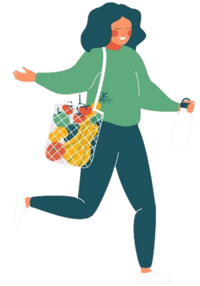

What is Plastic Pollution?
Plastic Pollution is the accumation of plastic objects and particles (e.g. plastic bottles, bags and microbeads) in the Earth's environment that adversely affects wildlife, wildlife habitat and humans. The chemical structure of most plastic renders them resistant to many natural processes of degradation and slow to degrade. Plastic pollution can afflict land, waterways and oceans. There are million tonnes of plastic waste enters the ocean from coastal communities each year. Living organisms, particularly marine animals, can be harmed either by mechanical effects such as entanglement in plastic object, problems related to ingestion of plastic waste and chemicals within plastics that interfere with their physiology.
Plastics are found in packaging, foodwear, and other domestic items that have been washed off of ships or discarded in landfills. Due to exposure to sun, rain and other environmental conditions, plastics release toxic chemicals into the ocean.
Plastic pollution has become one of the most pressing environmental issues. Many of plastic products have sa lifespan of mere minutes to hours, yet they may persist in the environment for hundreds of years. Around 275 million tonnes of plastic waste is generated each year around the world, between 4.8 million and 12.7 million tonnes is dumped into the ocean. The distribution of plastic is highly variable as a result of certain factors such as wind and ocean currents, coastline geography, urban areas and trade routes.
The Three R's Framework
Efforts to reduce the use of plastics, to promote plastic recycling and to reduce mismanaged plastic waste or plastic pollution have occured or are ongoing. Garbage and recycling bins help illustrate the three Rs.

Reduce
The best way to manage waste is not produce it. Avoid over-packaged goods which are packed with several materials.

Reuse
Reuse products for the same purpose. Save paper and plastic bags, reuse grocery bags and do not take a new bag from the store unless you need one.
Recycle
Recycling is a series of steps that take a used material and processes, remanufactures and sells it as a new product.
Copyright © All right served.